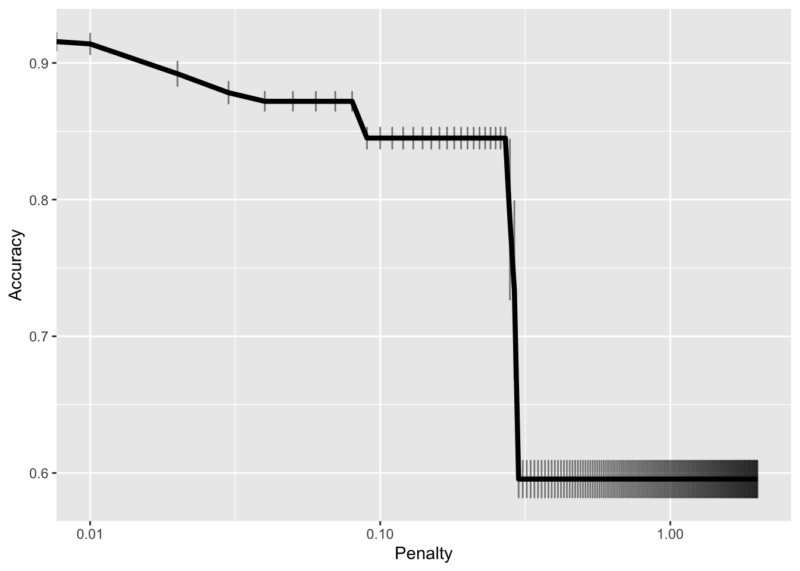

Analyzing Labor Action Events: Predicting Strike Outcomes with R and Tidymodels
GPIM 452 - Group 1
1. Introduction
The topic chosen by our group is the prediction of a labor action, whether it is a strike or a non-strike. After carefully considering and evaluating various options to find the most suitable approach for predicting strike or non-strike labor behavior, we decided on the LASSO logistics model as our prediction model. According to our analysis, the LASSO logistics model we chose exhibited impressive performance on the training set, achieving an accuracy rate of 92.79% and a ROC AUC of 96.74%. This indicated its ability to classify between strike and non-strike events effectively. Ultimately, testing on the latest data showed a maintained accuracy rate of 88.13%. The following part of this report will mainly focus on how we deal with the data, run different models, and evaluate their performance.
2. Data
In addition to the provided labor action data dataset (LAT), we incorporated the American Community Survey (ACS) data to enrich our analysis. This supplementary dataset offers valuable demographic and socio-economic information that can provide deeper insights into the factors influencing labor actions.To enhance the compatibility of the dataset, our team implemented various adjustments. We first filtered and cleaned the LAT dataset, keeping only labor actions with a single location and extracting longitude and latitude information. Next, we downloaded the shapefile for U.S. county boundaries and converted it to our dataset’s coordinate reference system. By spatially joining the dataset with the county boundary data, we associated each labor action with its respective county, facilitating the merge with ACS data to generate a dataset with the units of observations being counties.Next, we create a binary variable that shows whether the labor action is a Strike. Based on the value of the “strike_or_non-strike” column, if it is “Strike,” then the binary variable is set to 1. Then, for those observations with various measurement units, such as the labor action duration unit, which varies from days to seconds, we standardized the unit and transferred all the observations into a single unit measured. In terms of data cleansing and modifying, we standardized names and dates to ensure consistency and accuracy of datasets. We removed white space to improve the readability and cleanliness of the data. We identified and eliminated redundant columns that do not contribute significantly to our predictive model. We preserved only the first value for variables containing multiple values, simplifying the data set for analysis. Additionally, given that the LASSO model does not support time variables, we removed all time-related variables to meet the model’s requirements better.
In dealing with missing variables, we adopted different strategies based on the nature of the variables and the number of missing values to maximize data integrity and usability. Firstly, we chose to remove all the columns directly for variables with many missing values and with minimal impact on the model. This approach benefits the model by reducing interference and allowing it to focus on relevant and representative variables. Secondly, we filled in missing values with “Missing” for categorical variables. This step helps maintain the structural integrity of the data, avoiding situations where missing values are ignored or removed during analysis. Lastly, for variables with fewer missing values, we filled them with the median. This method helps preserve the distribution characteristics of the data, preventing data biases caused by missing values and thus improving the accuracy and stability of the model.
3. Model
Of the three models considered (linear and logistic regression, KNN, and Random Forest), the model that provides the best result and is commonly used to predict binary variables, as in our case of predicting whether a labor event is a strike or a non-strike, is the logistic regression model. On top of using logit, we implemented the LASSO estimator, which provides variable selection and regularization to improve the accuracy and interpretability of the model it creates. Implementing the LASSO estimator in a logistic regression allows for the usage of a penalty value equivalent to the absolute value of the magnitude of the coefficient of the loss function. The higher the penalty value, the more severe the model’s feature selection is, and vice versa for a lower penalty value. Therefore, logistic regression would be especially helpful for binary classification problems, and the LASSO estimator will deduce multiple variables in our recipe and keep only those that are significant.
One of the benefits of LASSO logistics is its ability to perform feature selection. Feature selection within LASSO logistics is when the model analyzes all the variables within the model and determines which variables have the most significant impact on the outcome variable. Feature selection achieves this by shrinking the coefficients related to less important variables to zero, effectively removing irrelevant variables from the model. Given the large number of variables within the Labor Action Tracker data, this feature will be useful here in finding which variables are important in predicting whether an event is a strike. The penalty value was applied to the coefficients in the LASSO logistics model for parameter tuning and tuned through cross-validation. To find the best parameter that would produce a model with the highest accuracy, each penalty value between 0.01 and 2 was tried for the LASSO logistics regression in a 5-fold cross-validation until it found the penalty value that produces the best performance on average from the cross-validation. As evident in the figure, the best penalty tuning value was 0.01, providing a model with a 0.913 accuracy rate.
To evaluate the performance of our LASSO logistics regression model, we used a Confusion Matrix. The Confusion Matrix is useful in estimating the accuracy of the LASSO logistics regression model as it measures how well a model can predict the true strike and non-strike of a predictive model. Given that the goal of this model is to predict whether a labor event is a strike or a non-strike, the performance metric being prioritized was the model’s accuracy rate. After running the Confusion Matrix on the training data, the matrix revealed that the model had an accuracy rate of 0.928, meaning that the model was running with a relatively high accuracy rate. With the initially high accuracy rate on the training data, there were concerns about overfitting. However, the model still performed well when the data was run on the new 2024 LAT dataset. With a slightly lower accuracy rate, the model run on the 2024 LAT dataset had an accuracy rate of 0.881, thus confirming that the model is generalizable overall. Considering the interpretability of LASSO logistics regression, this model is highly interpretable. Through its feature selection method, it can identify and list the predictor variables that have the greatest impact on the outcome variable. The list of predictors and their coefficients is ordered to highlight the most important predictor variables and bring the coefficients of less important variables to 0, making the model easy to interpret.
4. Conclusion
Given the amount of missing data within the LAT data and the formation of some of the features within the dataset, assumptions about the data that may not be true were created. For instance, the Labor Organization variable had to be removed from consideration for the model because the data entry had several missing value names that indicated the same labor organization—identifying the different types of naming schema proves to be a massive undertaking. To solve this issue, allocating a unique identifier representing a labor organization may have been useful to avoid the problem created by multiple names representing one organization. In addition to missing data, numerous features contained more than one value. There was no information on why these variables were created this way or if there was a purpose for ordering the multiple values. This led our group to assume that the first value holds the most important indicator and remove the rest in order to create the model. If the data had been organized tidier, meaning one cell holds one value, the importance of the variables with multiple values in a cell may have changed the outcome of which variables had the most significant effect that led to a strike vs non-strike.

Accordingly, our model strength determines which features are most important to consider when predicting whether a labor event is a strike or a non-strike. The figure above shows the features that impact the prediction of whether or not an event is a strike versus a non-strike. This information is specifically useful for employers and policymakers as it allows them to look at the features with the greatest effect and use them to implement policies that improve conditions for workers before they feel the need to strike.